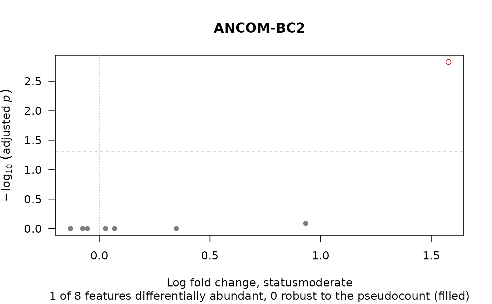
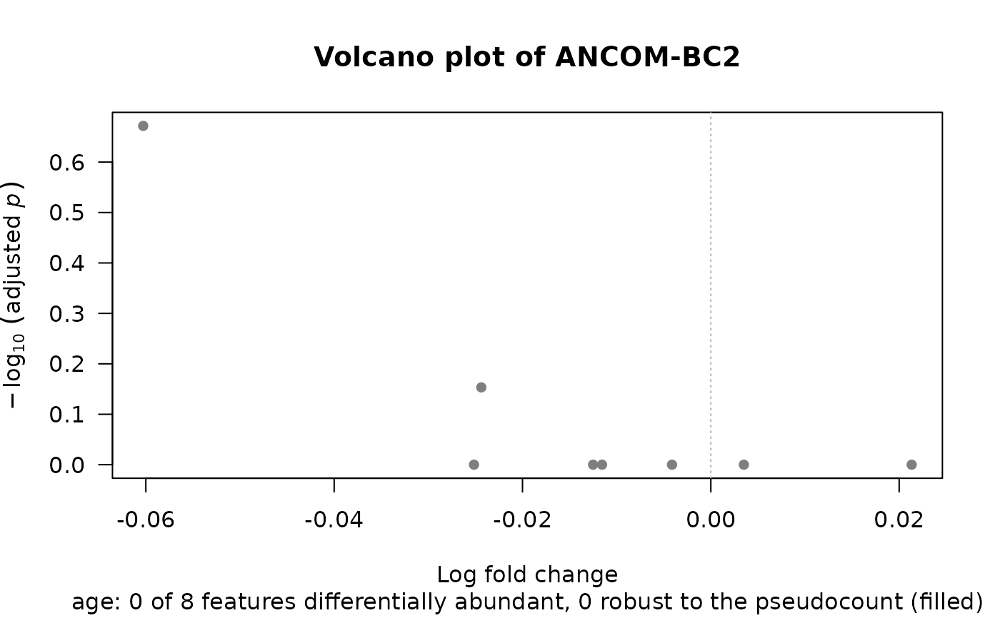

Plots the results of ancombc() and ancombc2() and of their post-hoc
tests, from what each holds:
Usage
# S3 method for class 'ecodive_ancombc'
plot(x, covariate = NULL, labels = 10, ...)
# S3 method for class 'ecodive_ancombc_pairwise'
plot(x, n_features = 30, digits = 2L, ...)
# S3 method for class 'ecodive_ancombc_dunnett'
plot(x, n_features = 30, digits = 2L, ...)
# S3 method for class 'ecodive_ancombc_global'
plot(x, n_features = 30, ...)
# S3 method for class 'ecodive_ancombc_trend'
plot(x, n_features = 30, ...)Arguments
- x
The result of
ancombc(),ancombc2(),ancombc_global(),ancombc_pairwise(),ancombc_dunnett(), orancombc_trend().- covariate
For
ancombc()andancombc2(): which covariate's log fold changes to plot, as named in the result'scovariatecolumn (such as"statusmoderate"or"age"). Defaults to the first covariate that isn't the intercept.- labels
For
ancombc()andancombc2(): how many of the differentially abundant features to name, those with the smallest adjusted p-values. Default10;0for none.- ...
Passed on to
graphics::plot.default()for the volcano plot,graphics::image()for the heatmap (wherecolis the colour scale, from most negative to most positive), andgraphics::dotchart()for the dot chart (colas itscolor), such asmain,sub,xlaborcex.- n_features
How many features to show: for the heatmap, those with the smallest adjusted p-value in any comparison; for the dot chart, those with the largest statistic. Default
30;Inffor all.- digits
For the heatmap: the number of decimal places of the log fold changes written in its cells. Default
2.
Details
ancombc(),ancombc2(): a volcano plot of one covariate's bias-corrected log fold changes against their adjusted p-values.ancombc_pairwise(),ancombc_dunnett(): a heatmap of the log fold change of each feature (rows) in each comparison (columns), with the significant ones in bold.ancombc_global(),ancombc_trend(): a dot chart of each feature's test statistic, largest first.
Features declared differentially abundant (reject = TRUE) are
highlighted in all of them. When the fit was made with a sensitivity
analysis (sensitivity, see ancombc()), the robust decisions
(reject_robust) are drawn filled (in bold in the heatmap) and named,
and the others that are significant hollow (in italics).
Log fold changes are natural logs, as ANCOM-BC estimates them; the axis
label and the heatmap's subtitle say so from the result's log_base
attribute. In the
volcano plot, the y axis is \(-\log_{10}\) of p_adjusted, with a
dashed line at alpha; coefficients that couldn't be estimated (NaN)
are left out. In the heatmap, red cells are increases and blue cells
decreases, on a scale symmetric about 0, and the value of each cell is
written in it, in bold when that comparison is significant for that
feature. For ancombc_trend(), each feature's label gives the pattern
with the largest statistic.
Examples
x <- rbind(
c(1, 10, 16, 0, 0, 12, 0, 7), c(0, 10, 45, 2, 1, 25, 1, 9),
c(4, 8, 22, 1, 5, 14, 1, 5), c(1, 11, 22, 1, 4, 14, 1, 3),
c(4, 7, 36, 0, 0, 19, 0, 9), c(2, 30, 26, 0, 0, 12, 1, 0),
c(1, 36, 10, 1, 5, 15, 2, 9), c(1, 25, 11, 2, 2, 8, 0, 5),
c(1, 36, 23, 0, 2, 11, 1, 2), c(3, 60, 33, 3, 4, 14, 1, 6),
c(3, 57, 30, 3, 1, 3, 0, 4), c(0, 65, 23, 0, 2, 2, 0, 8),
c(2, 46, 19, 0, 1, 2, 0, 1), c(0, 41, 26, 0, 2, 0, 0, 3),
c(3, 46, 20, 0, 0, 3, 0, 0) )
dimnames(x) <- list(paste0('S', 1:15), paste0('F', 1:8))
meta <- data.frame(
status = rep(c('mild', 'moderate', 'severe'), each = 5),
age = c(25, 48, 23, 35, 52, 51, 18, 29, 40, 29, 44, 39, 26, 37, 46),
row.names = rownames(x) )
fit <- ancombc2(x, ~ status + age, meta, groups = 'status')
# Moderate against mild, then age.
plot(fit)

plot(fit, 'age')

# Every pair of groups.
plot(ancombc_pairwise(fit))
 # Any difference between the groups.
plot(ancombc_global(fit))
# Any difference between the groups.
plot(ancombc_global(fit))